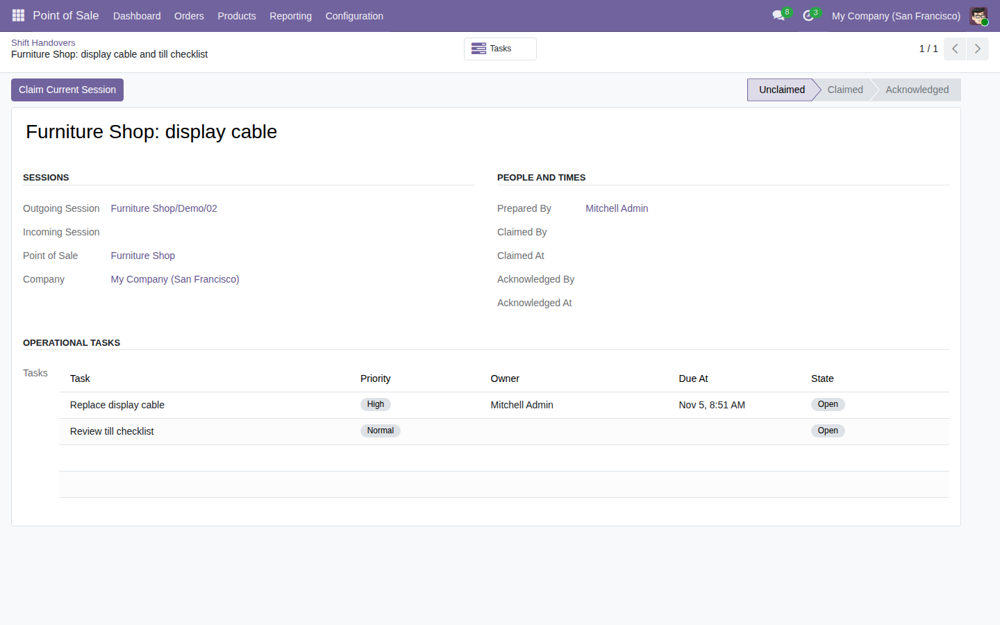

Pass operational tasks from a closed POS session to a later open session on the same register, with a recorded claim and acknowledgment.
Free, open-source Odoo 19 addon (LGPL-3). Requires the standard point_of_sale module.
Open an outgoing POS session and use Outgoing Handover; the next session can claim and acknowledge it.

Tested on Odoo 19 Community with a two-user claim race and English/Polish backend screens. This is a backend workflow: no POS cashier frontend or offline support. A shared database login cannot identify the individual employee. Enterprise compatibility remains unverified.